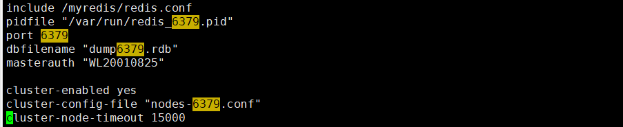
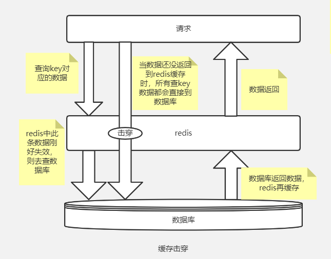

Redis学习笔记
Redis基础
1.Redis服务启动与关闭
- 启动Redis服务: 在redis目录中 ----- redis-server /etc/redis.conf(/etc/redis.conf是自己配置的新的配置文件的位置，可以后台启动)
- 关闭Redis服务: shutdown
2.连接与退出Redis
-
连接： redis-cli
-
退出： exit
Redis 常用数据类型
redis操作数据命令：
- (https://blog.csdn.net/weixin_43829443/article/details/112764830)
- (https://blog.csdn.net/weixin_43829443/article/details/112795840)
1.Redis String
- redis中的incr操作是原子操作
- 一个并发问题
2.Redis List
-
双向链表
-
lrange key 0 -1 查看List中所有value
-
lpush其实就是头插入法
-
rpush就是尾插法
Ex：List中原本有一个 v1 头插法v2,v3 => v3 -> v2-> v1
尾插法v2,v3 => v1 -> v2 -> v3
3.Redis Set（去重）
4.Hash 哈希
存储方式：key value
field1 value1
filed2 value2
…
Ex: User结构
数据结构： ziplist（压缩列表，数据量较少时） hashtable（数据量较多时）
5.Zset(sorted set)有序集合
-
不同于普通set地方：每个元素value有一个权重socre属性 用于排序
-
Vim中使用搜索功能：命令模式下 / + 要搜索的关键词
Redis发布与订阅
发布与订阅
Redis发布订阅（pub/sub）是一种消息通信模式：发送者（pub）发送消息，订阅者（sub）接收消息
Rredis客户端可以订阅任意数量的频道
Redis6新数据类型
1.Bitmaps
Bitmaps 称为位图，它不是一种数据类型。网上很多视频教程把Bitmaps称为数据类型，应该是不正确的。Bitmaps 是Redis提供给使用者用于操作位的“数据类型”。它主要有如下的基本特性：
- Bitmaps 不是数据类型，底层就是字符串（key-value），byte数组。我们可以使用普通的get/set直接获取和设值位图的内容，也可以通过Redis提供的位图操作getbit/setbit等将byte数组看成“位数组”来处理
- Bitmaps 的“位数组”每个单元格只能存储0和1，数组的下标在Bitmaps中称为偏移量
- Bitmaps设置时key不存在会自动生成一个新的字符串，如果设置的偏移量超出了现有内容的范围，就会自动将位数组进行零扩充
应用：计算连续两天都访问了网站的用户：
2.HyperLogLog
- 基数：一个集合中不重复元素的数量
- 可用于去重，统计数量
3.Geospatial
-
记录城市坐标 经纬度
-
获取两个位置之间的直线距离
Jedis操作Redis
1.Jedis基本操作
1 | //连接Redis |
1 | //对Redis五大数据类型的操作 |
2.Jedis验证码实践
-
需求：
-
输入手机号，点击发送了随机生成六位数字验证码，2分钟内有效
-
输入验证码，点击验证，返回成功或失败
-
每个手机号每天只能输入3次
-
-
实现：
- 生成验证码
Random
-
验证码2分钟有效
把验证码放到redis里，设置过期时间120s
-
判断验证码是否一致
从redis获取验证码和输入的验证码进行比较
-
每个手机每天只能发送三次验证码
incr 每次发送后+1
大于2时，提交不能发送
1 | //生成验证码 |
RedisTemplate
1.springboot整合Redis
- springboot整合Redis依赖 -> spring-data-redis + commons-pool2
- springboot默认使用的是lettuce，若要使用jedis需要额外引入jedis依赖
- redisTemplate默认可以接收任何类型value，默认使用JDK序列化
2.RedisTemplate序列化方案
- 自定义redisTemplate
- 设置key & hashey用StringRedisSerializer的序列化,value & hashvalue用GenericJackson2JsonRedisSerializer的序列化
- 自动进行序列化和反序列化,但是会占用额外的空间(序列化时会记录类的信息)
- 使用StringRedisTemplate，占用空间更少但是需要手动对对象进行序列化和反序列化
3.StringRedisTemplate
- 存入的value都是String(需要自己手动进行序列化)，取出的也是json字符串，需要自己去反序列化
Redis事务和锁机制
-
Redis事务是一个单独的隔离操作：事务中的所有命令都会序列化，按顺序的执行。事务在执行的过程中，不会被其他客户端发送来的命令请求所打断
-
Redis事务的主要作用就是串联多个命令防止别的命令插队
1.Multi，Exec，discard
Multi：组队，将命令放入队列等待执行
Exec：执行队列中的命令
discard：放弃组队，不进行执行
2.事务的错误处理
- 组队阶段命令出现错误：最终所有组队中所有命令都无法执行
- 执行阶段失败：哪个命令失败就不执行哪个命令，其他命令正常执行
3.事务的冲突问题
- 悲观锁与乐观锁
-
悲观锁在每次操作共享数据的时候都会进行加锁
-
乐观锁每次在操作共享数据的时候都可以对其进行访问，但是对它进行修改的时候必须比对版本号，若和数据库中不一致则会修改失败
-
watch
在组队阶段之前使用 watch key 的方法监视某个或多个key，若在事务执行之前这些key被其他命令所改动，那么事务将被打断。**unwatch **取消监视
4.Redis事务的三特性
-
单独的隔离操作
事务中所有命令都会序列化，按顺序的执行。事务在执行的过程中，不会被其他客户端发送来的指令请求所打断
-
没有隔离级别的概念
队列中的命令没有提交之前都不会实际被执行，因为事务提交前任何指令都不会被实际执行
-
不保证原子性
事务中如果有一条命令执行失败，其后的命令任然会被执行，没有回滚
5.Redis秒杀
-
业务流程
-
UID 和 prodID判空
-
连接redis
-
拼接key
3.1 库存key
3.2 秒杀成功的用户key
利用watch监视库存
-
获取库存，若未null，则表示秒杀还未开始
-
若用户已经秒杀成功了则不能重复进行秒杀
-
判断商品数量，库存数量小于1，秒杀结束
-
秒杀过程
Multi开始组队任务
7.1 库存-1 加入任务列表
7.2 将秒杀成功的用户加入到秒杀成功的清单中 加入任务列表
7.3 执行任务列表
-
根据执行的结果来判断改此秒杀是否成功
-
-
利用ab工具发送并发请求
ab -n 1000 -c 100 -p ./postfile -T application/x-www-form-urlencoded
http://192.168.1.6:8080/secKill
(-n 请求次数 -c 并发次数 -p 请求参数文件名 -T contentType)
1 |
|
-
解决超卖问题：利用Redis的乐观锁
-
还未解决的问题及方案：
-
超时问题 -> redis连接池
-
库存遗留问题 -> 利用lua脚本(在Redis2.6+版本支持 相当于起到了悲观锁的作用)
-
Redis持久化-RDB
-
在指定的时间间隔见内存中的数据集快照写入磁盘
-
Redis会单纯创建(fork)一个子进程来进行持久化，会先将数据写到一个临时文件中，待持久化过程都结束了，再用这个临时文件替换上次持久化好的文件。在整个过程中，主进程没有任何IO操作
-
redis启动目录中会创建dump.rdb文件
-
RDB的缺点是最后一次持久化后的数据可能丢失
-
对数据一致性要求不高的情况适用
-
保存快照的时间间隔：
- Redis服务启动时，会读取dump.rdb中的数据进行恢复
Redis持久化-AOF
-
已日志的形式记录每个写操作(增量保存)，将Redis执行过的所有写指令记录下来(读操作不记录)，只需追加文件但不可以改写文件，redis启动之初会读取该文件重新构建数据(即redis重启的话就根据日志文件的内容将写指令从前往后执行一次完成数据的恢复工作)
-
redis默认未开启AOF，AOF和RDB同时开启时，系统默认读取AOF数据(appendonly.aof文件)，appendonly.aof文件也是在redis启动目录下
-
AOF文件修复：/usr/local/bin/redis-check-aof–fix appendonly.aof 进行修复
-
appendfsync同步频率： always second no
-
持久化流程
- 客户端的请求写命令会被append追加到AOF缓冲区内
- AOF缓冲区根绝AOF持久化策略appendfsync，将操作sync同步到磁盘的AOF文件中
- AOF文件大小超过重写策略或手动重写时，会对AOF文件rewrite重写，压缩AOF文件容量
- redis重启时读取AOF文件读取数据
Redis-主从复制
1. 主从复制的优点
- 读写分离，性能扩展
- 容灾快速恢复
2. 搭建一主两从
-
配置主从的配置文件redis6379.conf,redis6380.conf,redis6381.conf
-
配置文件内容(include命令会包含指定配置文件的公共内容，其余自行设置)
-> redis6380.conf文件配置
-
启动三个Redis服务，在从机上执行 slaveof 主机ip 端口号 来指定该从机的主机
-
info replication 命令查看从机or主机的状态
3. “一主二仆”
-
从服务器挂掉之后，它会变成主服务器，要重新设为从服务器，它会把主服务器中的数据全部复制到该从服务器中去
-
主服务器宕机后，重启仍是主服务器，从服务器任是从服务器
-
复制原理
-
从服务器连接上主服务器之后，从服务器向主服务器发送进行数据同步消息
-
主服务器接收到从服务器发送过来的同步消息，把主服务器数据进行持久化至rdb文件，把rdb文件发送到从服务器，从服务器拿到rdb进行读取
-
主服务器进行写操作之后，和从服务器进行数据同步
-
4. “薪火相传 反客为主”
- 从机也可以成为其他从机的主机(一层套一层)
- 当某个主服务器宕机后，其从服务器可以使用slaveof no one 使该从服务器成为主机
5. 哨兵模式
-
即自动版的"反客为主"
-
哨兵模式搭建
-
首先如上搭建"一主二从"
-
创建sentinel.conf文件并配置
monitor mymaster 意思监视的主机的名字为mymaster ip和端口为127.0.0.1 6379
1 为至少有1个哨兵同意迁移
3.使用redis-sentinel sentinel.conf启动哨兵
启动成功后，会显示被监视的主机以及其从机
- 当主机宕机后，会从从机中选举产生新的主机，原主机重启后会变成从机
- 选举的优先级依次为：
- redis.conf中slave-priority 默认100 数字越小优先级越高
- 偏移量最大的(获得原主机数据最全的)
- runid最小的(redis启动时随机生成的40位的ID)
-
Redis集群
1. 集群
- 集群实现了对Redis的水平扩容，即启动N个redis节点，将整个数据库分布存储在这N个节点中，每个节点存储总数据的1/N
- Redis集群通过分区来提供一定程度的可用性：及时集群中有一部分节点失效或者无法进行通讯，集群也可以继续处理命令请求
2. 集群的搭建
无中心化集群
-
删除所有RDB文件
-
创建6个配置文件 redis 79 80 81 89 90 91 .conf
配置文件内容：

vim替换操作：:%s/abc/efg -> 将abc替换为efg
-
启动6个redis服务 会生成节点配置文件nodes-xxxx.conf
-
进入redis安装目录src 执行
redis-cli --cluster create --cluster-replicas 1 -a WL20010825 192.168.246.128:6379 192.168.246.128:6380 192.168.246.128:6381 192.168.246.128:6389 192.168.246.128:6390 192.168.246.128:6391 命令搭建集群
(1代表一台从机，为最简单的方式，一主一从为一组，共三组)
-
(上面接受了默认的集群分配方式)集群搭建成功后 可使用redis-cli -c -p 6379 -a password 命令使用集群方式进行连接(-c 代表采用集群策略连接，设置数据会自动切换到对应的写主机)
-
cluster nodes 命令用于查看集群信息(当前连接的主机self，主机之间的主从关系)
3. 集群操作和故障恢复
-
集群分配原则：分配原则尽量保证每个主数据库运行在不同的IP地址上，每对从库与主库不在一个IP地址上

-
redis集群16384个插槽(0-16383) 3台主机分别对应的插槽范围 0-5460,5461-10922,10923-16383
-
当设置key-value时会计算该数据放入哪个插槽
-
设置数据时会根据该key来计算该放入哪台主机的哪个插槽,并跳转到对应主机
-
若要一次添加多个数据，则使用{groupname}组的方式进行添加(会根据组名进行计算插槽)
-
每个客户端只能查看该客户端中的插槽中的值
-
无论登录哪个主机，在存储数据时候都会去根据所存储数据的Key去计算插槽值，然后跳转到对应的写主机并进行存储，同理，取值的时候可以取到所有主机中的值，即跳转到目标主机并取值
-
当某个主机宕机后，其从机会变成主机，主机重启后变成从机，若主从都宕机则根据redisxxxx.conf中的配置决定
应用问题解决方案
1. 缓存穿透
现象：
- 应用服务器压力变大
- redis命中率降低
- 一直查询数据库
- 造成缓存穿透的主要原因就是：查询某个 Key 对应的数据，Redis 缓存中没有相应的数据，则直接到数据库中查询。数据库中也不存在要查询的数据，则数据库会返回空，而 Redis 也不会缓存这个空结果。这就造成每次通过这样的 Key 去查询数据都会直接到数据库中查询，Redis 不会缓存空结果。这就造成了缓存穿透的问题
常见的两种情况：
- redis查询不到数据
- 出现很多非正常url访问
解决方案：
- 对空值缓存
- 设置可访问的名单(白名单)
- 采用布隆过滤器
- 进行实时监控
2. 缓存击穿
现象：
- 数据库访问压力瞬时增加
- redis正常运行
- 造成缓存击穿的主要原因就是：我们为缓存中的数据设置了过期时间。如果在某个时刻从数据库获取了大量的数据，并设置了相同的过期时间，这些缓存的数据就会在同一时刻失效，造成缓存击穿问题
原因：
-
redis某个key过期了，大量访问使用这个key

解决方案：
- 预先设置热门数据
- 实时调整
- 使用锁
3. 缓存雪崩
-
造成缓存雪崩的主要原因就是缓存集中失效，或者缓存服务发生故障，瞬间的大并发流量压垮了数据库。

解决方案：
- 构建多级缓存架构
- 使用锁或队列
- 设置过期标志更新缓存
- 将缓存失效时间分散开
4. 分布式锁
- 设置锁和过期时间
-
setnx(上锁) + del(释放锁)
-
expire(设置过期时间自动释放锁防止死锁)
-
上锁之后突然出现异常,无法设置过期时间 -> set lockname value nx(上锁) ex 12(过期时间)
这样既上锁也设置了过期时间
-
UUID防止误删
情况：A先获取了锁，在执行具体操作时候服务器卡顿，由于设定了过期时间，过期时间一到锁便会被释放，这时候B抢到了锁，正在执行具体操作，这时候A所在的服务器停止了卡顿，正常执行操作，执行手动释放锁的操作，这时候由于B还在执行具体操作，他会释放掉B的锁
- 解决方案：在设置锁的时候设置一个UUID,在手动释放锁的时候要判断redis中的UUID和当前服务器中生成的UUID是否一样，一样才可以进行删除
-
LUA保证删除原子性
上述UUID在判断过后并释放锁的过程不是原子性操作造成问题：A判断了UUID，要进行释放锁但是还没有释放的时候，锁到了过期时间，自动释放，这时候B获取到了锁，这时候A去执行了释放锁，他会释放掉B的锁
(要保证加锁和解锁具有原子性)
Redis实战解决方案
1. 基于redis实现短信登录
2. 缓存更新策略
- 缓存速度为微秒级别，而操作数据库较慢，在并发场景下，查缓存写缓存(case1)发生在删除缓存和更新数据库之间的概率是非常高的,而case2中更新数据库并删缓存这种操作相对比较耗时，发生在查询数据库和写入缓存直接的概率要低一些
缓存更新策略的实践方案：
-
低一致性需求：使用Redis自带的内存淘汰机制
-
高一致性需求：主动更新，并以超时剔除作为兜底方案
-
读操作
- 缓存命中直接返回
- 缓存未命中则查询数据库，并写入缓存，设置超时时间
-
写操作
- 先写数据库，然后再删除缓存
- 要确保数据库与缓存操作的原子性
-
3. 缓存穿透解决方案
缓存空值方案
1 | /** |
4. 缓存击穿解决方案
基于互斥锁方式解决缓存击穿
1 | //基于setnx自定义的锁 |
1 | /** |
基于逻辑过期方式解决缓存击穿
1 | /** |
1 |
|
1 |
|